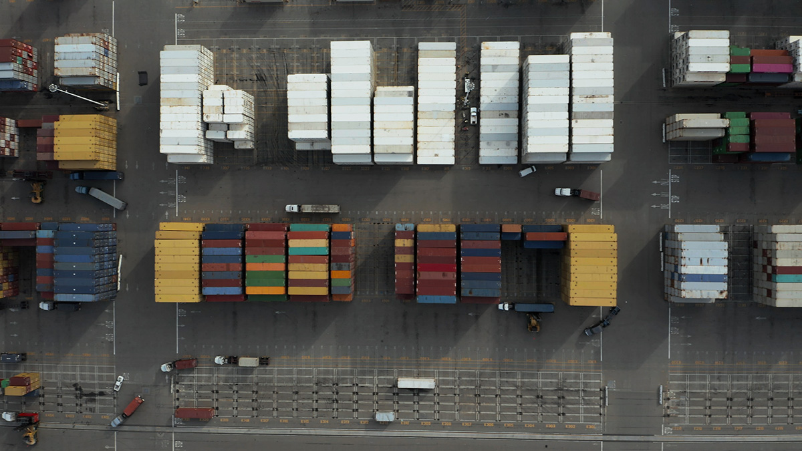

Aunque pueda parecer que los dos pesan lo mismo, en Logistica UDEC sabemos bien que no es lo mismo un kilo de paja que uno de hierro, al menos, en lo que al transporte por carretera se refiere. Y es que las necesidades de cada mercancía son diferentes para llevarlas de un lugar a otro. Por lo tanto, es esencial conocer el tipo de carga que se quiere transportar para adaptar el viaje a las necesidades de la misma. Sigue leyendo y descubre la clasificación de los diferentes tipos de cargas en el transporte.
Habitualmente, se suelen diferenciar tres tipos de carga: general, a granel y especial.
Son los ítems pequeños que se transportan por unidades. Se trata de las cajas y paquetes de todo tipo.
Como su propio nombre indica, se trata de la carga que va suelta y a granel, sin embalaje; normalmente porque se transporta en grandes cantidades. Suele tratarse de gases, líquidos, abonos y sustancias similares, difíciles de empaquetar por su propia naturaleza.
Se suele referir a la mercancía ADR o peligrosa, que necesita unas condiciones especiales para su traslado de
un
lugar a otro.
En nuestro post Cómo transportar mercancía ADR, ya te informamos de las medidas que hay que tomar con este
tipo de
productos
tóxicos o potencialmente nocivos.
En esta clasificación, también se podrían destacar dos subcategorías: la carga de productos perecederos como
por
ejemplo,
los productos alimentarios; y la carga de artículos frágiles, es decir, aquellos que exigen especial cuidado
porque
se rompen con facilidad.